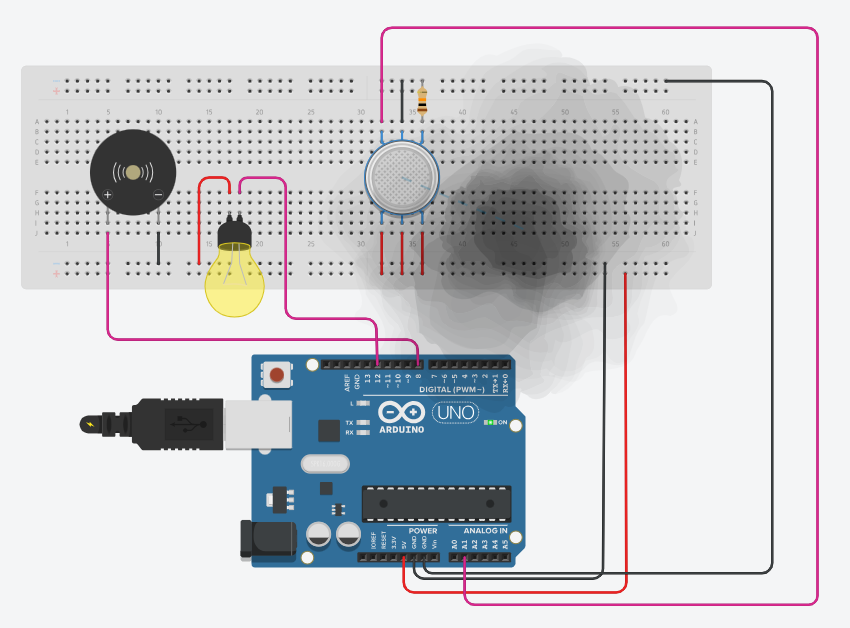
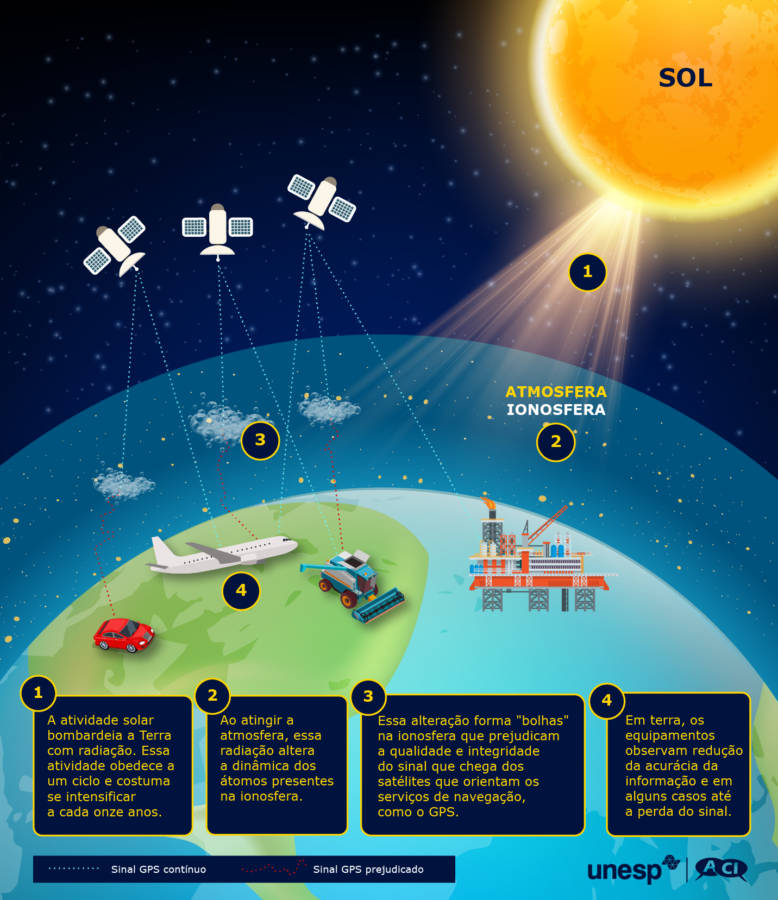
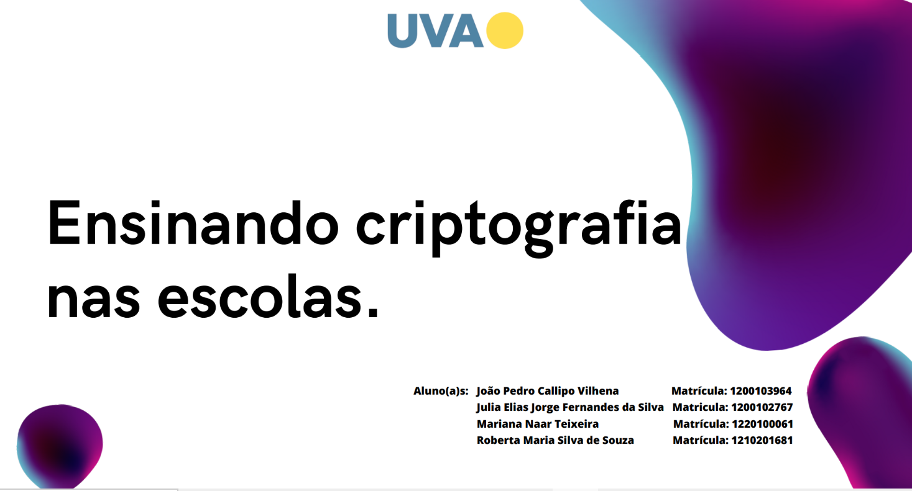

Descrição do projeto
O projeto de detector de fumaça foi realizado no último semestre no circuitmaker para disciplina de microcontroladores na linguagem C. O circuito detecta fumaça com alarme sonoro acionando o buzzer e luminoso acendendo a lâmpada.

Descrição do projeto
Foi realizado um estudo para o meu trabalho a respeito da cintilação ionosférica que afeta os serviços de satélite durante o período de maior incidência solar. O intuito da pesquisa e projeto, foi para auxiliar os funcionários a identificar os momentos de oscilação dos serviços, uma vez que trata-se de um fenômeno e não é possível evita-lo, apenas instruir os clientes a respeito do fenômeno e identificar mais rápido. (imagem da internet, um vez que não é possível utilizar documentos e imagens da empresa).

Descrição do projeto
Realizei em grupo um jogo utilizando criptografia para ensinar cibersegurança para crianças e depois criamos um novo para adultos, os jogos foram criados para disciplina de segurança de sistemas no último período. Confira o projeto:Ensinando Criptografia